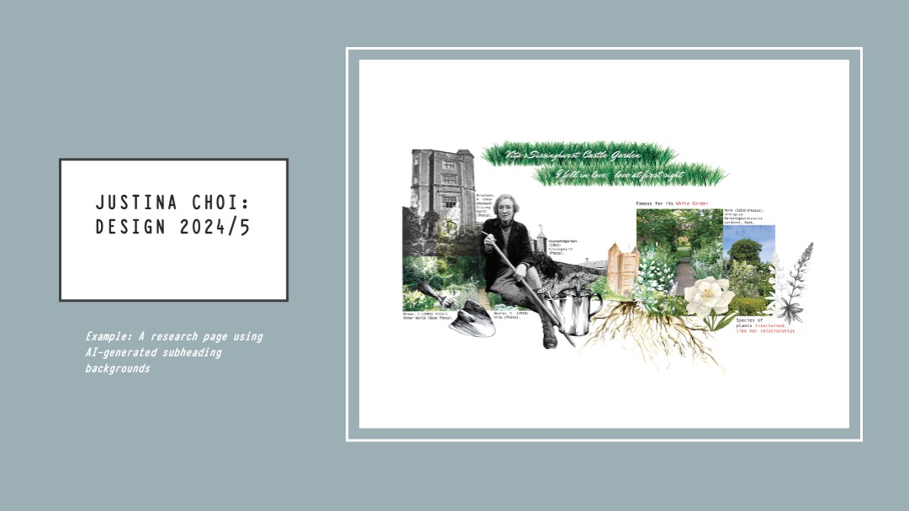
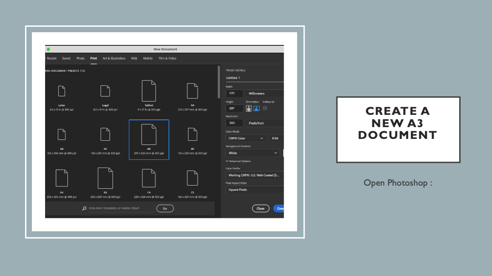
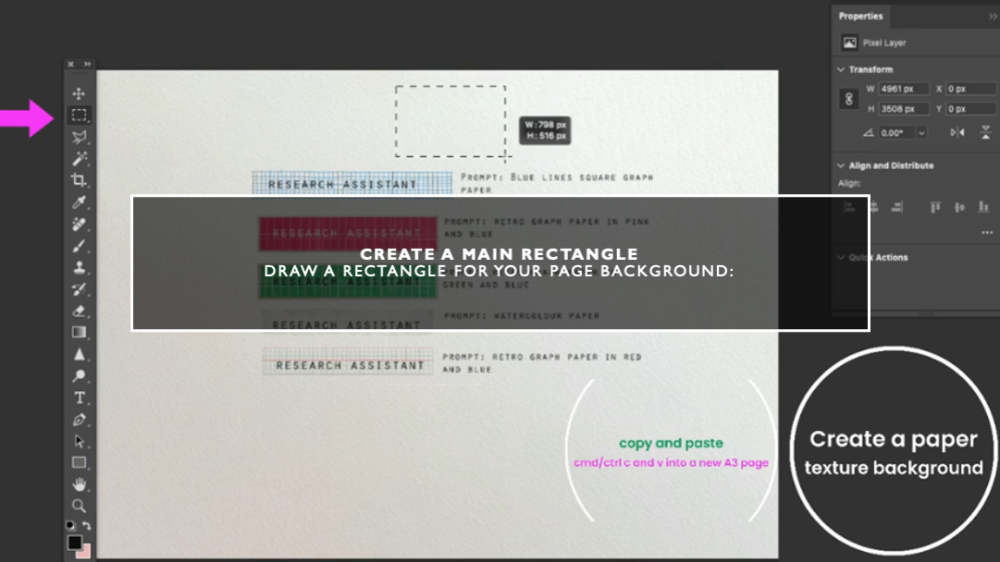
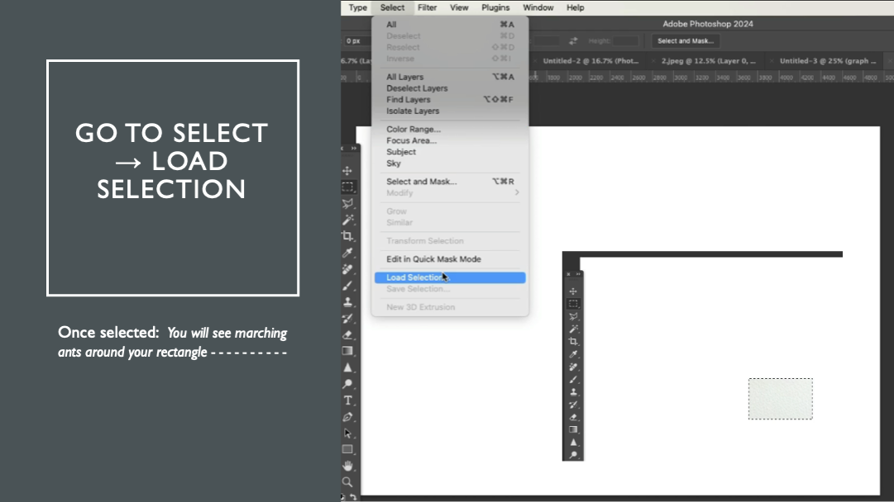
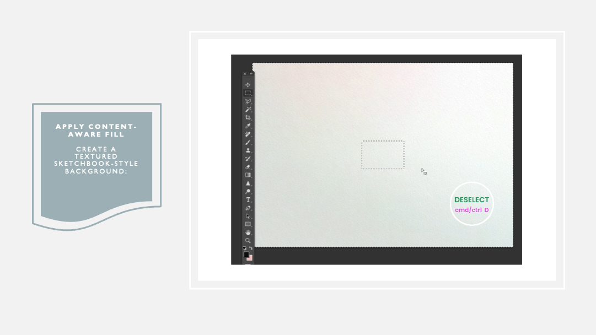
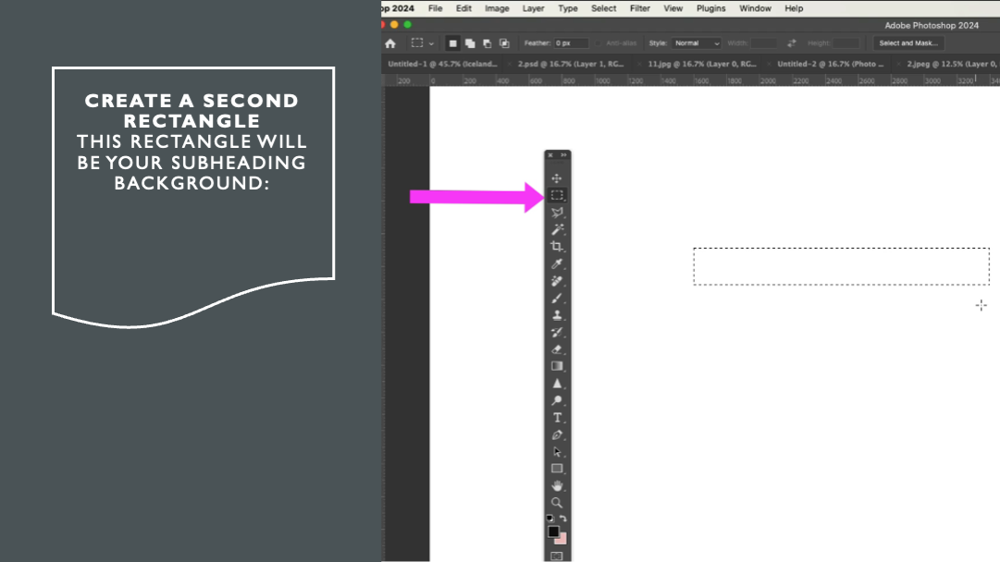
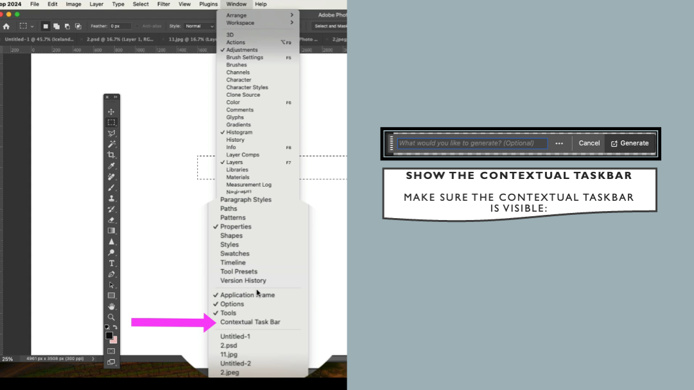
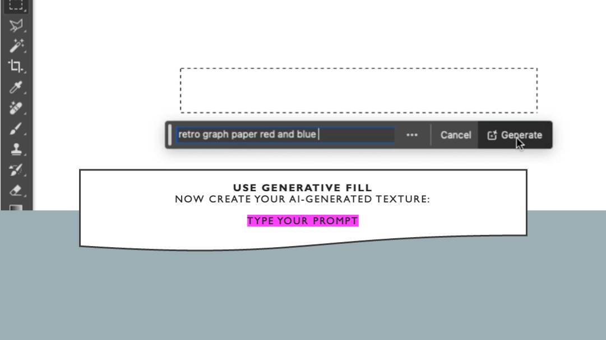

Use AI to Make Visual Subheadings for Your Research Pages
What You Will Learn
TASK 1
Try different Generative Fill prompts
TASK 2
Make a design page with subheadings
TASK 3
Save your progress
Overview
Introduction
Task 1
Try Prompts
Task 2
Design Page
Task 3
Save Progress
Workshop Overview
Making Subheadings with AI Generative Fill

You Will Learn To:
Make rectangle shapes for subheadings
Use Generative Fill with AI prompts
Create different visual effects
Use your own images for ideas
Make your pages look professional
Why Are Subheadings Important?
Good subheadings help readers:
Find information fast – readers can scan your page
Understand your work – each section has a clear topic
Stay interested – visual variety keeps attention
See your ideas – shows how you organised your research
Important: Make your subheadings specific. Don't write "Research". Instead, write what it is about. For example: "Traditional Japanese Textile Patterns" or "Sustainable Fabric Sources".
Key Words
Generative Fill
An AI tool in Photoshop. You type words (a prompt), and it makes an image for you.
Example: "masking tape texture"
Prompt
The words you type to tell AI what to make. Better words = better results.
Tip: Add colours, textures, and styles.
Contextual Taskbar
A toolbar that shows when you select something. It has the Generative Fill button.
Content-Aware Fill
A Photoshop tool that fills areas by looking at the image around it. Good for backgrounds.
TASK 1: Try Different Generative Fill Prompts
In this task, you will try different prompts to make subheading backgrounds.
Step-by-Step Guide In-Class
Set Up Your Document
1
Make a New A3 Document
Open Photoshop and make a new file:
Go to File → New
Size: A3
Direction: Landscape (horizontal)
Resolution: 300 dpi
Colour: CMYK

2
Draw a Rectangle
Make a rectangle for your page:
Select Rectangle Tool (U)
Draw a large rectangle
This is your main content area

3
Paste Into A3 Document
Copy your rectangle (Ctrl/Cmd + C)
Paste it (Ctrl/Cmd + V)
Move it where you want it
4
Select the Rectangle
Select the rectangle shape:
Hold Ctrl/Cmd and click on the layer
Or go to Select → Load Selection
You will see moving dots around your rectangle

5
Inverse Selection
Select the area outside your rectangle:
Go to Select → Inverse
Now the outside area is selected
This is where your background texture will go
6
Add Content-Aware Fill
Make a textured background:
Go to Edit → Content-Aware Fill
Change settings if you want
Click OK
Result: Your page now has a natural texture.

Make Subheading Backgrounds In-Class
Use Generative Fill for Subheadings
7
Make a Smaller Rectangle
This rectangle is for your subheading:
Select Rectangle Tool (U)
Draw a smaller rectangle
Make it big enough for text

8
Show the Contextual Taskbar
Make sure you can see the toolbar:
Go to Window → Contextual Task Bar
Make sure it has a tick ✓
The toolbar appears near your selection

9
Use Generative Fill
Now make your AI texture:
Select your small rectangle
Click Generative Fill in the toolbar
Type your prompt (see examples below)
Click Generate

10
Try Different Versions
Look at your result
Click Generate again for more options
Change your prompt and try again
Pick the best one
Tools to Help You In-Class
🛠️ Two Ways to Get Better Results
1. Use ChatGPT for Prompts
Not sure what words to use? Ask ChatGPT to help you write prompts!
Tell ChatGPT what you want (e.g., "I need a prompt for a Japanese-style texture")
Copy the prompt and paste it in Photoshop
Example: "Give me 5 prompts for soft watercolour textures"
2. Use a Reference Image
Put an image on your page first. Generative Fill will look at it and make something similar.
How to do it:
Place an image you like on your page
Draw your rectangle near or over the image
Use Generative Fill – it will match the style
Tip: This works well for colours and textures
Example Prompts to Try In-Class
Simple Prompts That Work Well
Tape Effect"masking tape texture"
Torn Paper"torn paper edges"
Soft Colours"soft pastel background"
Shadow"soft drop shadow"
Graph Paper"graph paper texture red blue"
Print Texture"monoprint texture"
Watercolour"watercolour wash blue"
Fabric"linen fabric texture"
💡 Connect Your Prompt to Your Research
You can make your background more meaningful by connecting it to your research subject. Think about the textures, colours, or atmosphere related to your icon.
Student Example:
A student researching a historical figure used a descriptive phrase about nature and growth. The result was a subtle grass texture - perfect for placing text on top.
How to Do This
Think about your research icon or subject
What textures, colours, or feelings connect to it?
Ask ChatGPT for a short descriptive phrase
Use that phrase as your prompt
Example Ideas
Nature icon: "soft organic growth texture"
Ocean theme: "calm water ripple pattern"
Textile research: "woven thread texture subtle"
Urban theme: "concrete texture weathered"
⚠️ Remember:
Keep it as a texture or background - not a detailed image
It should be subtle enough for text to sit on top
The background should support your content, not distract from it
Video: How to Use Generative Fill
Watch how to use Generative Fill in Photoshop
Task 1 Checklist
You Must Show:
At least 4-5 different prompt ideas
Screenshots of your experiments
Different visual results
Notes on what worked best
TASK 2: Make Your Design Page
Use your Generative Fill skills to make a complete research page.
What Makes a Good Research Page?
Clear Subheadings
Tell the reader what each section is about
Be specific, not general
Use visual backgrounds to stand out
Research Content
Include facts and information
Show you looked into your topic
Use your own words
Visual Balance
Mix images, backgrounds, and text
Leave some empty space
Make it easy to read
Professional Look
Same style on the whole page
Everything lined up
Good colour choices
How to Write Good Subheadings
Tips:
Be specific: Not "Research" → "Traditional Kimono Methods"
Show your focus: Each subheading = one topic
Keep it short: 3-6 words is good
Tell a story: Guide the reader through your work
Good vs. Bad Subheadings
❌ Bad (Too General)
"Research"
"Images"
"Information"
"Artist"
✓ Good (Specific)
"Shibori Dyeing Techniques"
"Natural Dye Colours"
"Sustainable Fabric Sources"
"Issey Miyake's Pleating"
Build Your Design Page
Page Structure
1
Plan Your Layout
Open an A3 page in Photoshop
File → Place Embedded → add your scanned design sheet
Plan where your subtitles will go
Make sure subtitles match your research
2
Make Your Background
Use Content-Aware Fill from Task 1
Pick a style that fits your topic
Keep it simple – don't distract from content
3
Add Your Subheadings
Make rectangles for each subheading
Use Generative Fill with your prompts
Pick textures that work together
Add your text on top
4
Add Research Content
Place your images
Write short paragraphs with facts
Make sure text is easy to read
Add sources if needed
5
Check Your Work
Check everything is lined up
Is the page balanced?
Read text for mistakes
Ask: Can readers understand my research easily?
Task 2 Checklist
You Must Include:
Generative Fill subheadings in your design
Specific subheading titles
Images about your research
Facts and research text
Clear, easy-to-read layout
Same style throughout
TASK 3: Save Your Progress
Document your work to show what you learned.
Why Save Your Progress?
Saving your process helps you:
Show your development – tutors see how you improved
Think about your learning – understand what worked